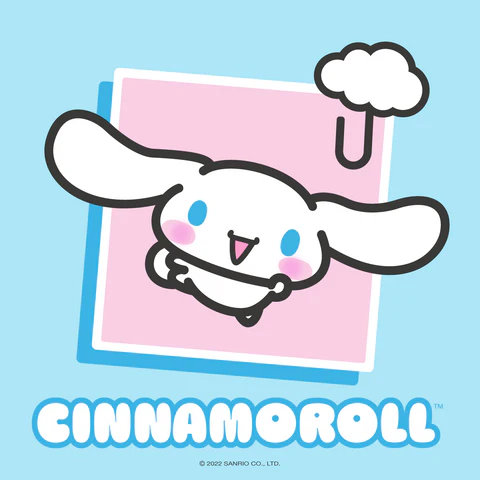
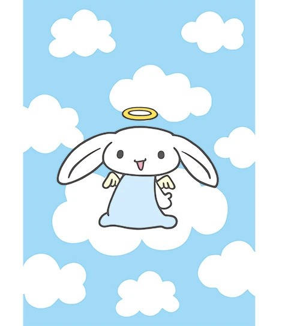

Cinnamoroll
Cinnamoroll é um personagem criado pela Sanrio em 2001. Apesar de primeiro olhar ele parecer com um coelho, mas na verdade ele e um cachorrinho branco com rabo que lembra um rolinho de canela, dai vem a origem do seu nome, e orelhas longas e grossas que lhe permitem voar.

Origem
Cinnamon foi criado por Miyuki Okumura para a Sanrio em 2001. Quando a Sanrio recebeu o desenho original, que fazia com que ele se parecesse com um coelho angelical, eles o rejeitaram, levando Okumura a voltar à prancheta e revisar o desenho. Em setembro de 2001, ele foi apresentado em um artigo no The Strawberry News, juntamente com outros desenhos de personagens, e os fãs puderam votar no desenho que mais gostaram.

Cinnamon estreou oficialmente em junho de 2002 como Baby Cinnamon. No entanto, seu nome mudaria rapidamente para simplesmente “Cinnamon” ou “Cinnamoroll” em 2003, em um esforço para atrair o público estrangeiro.
História
Contado no filme Cinnamon, the Movie! Cinnamon nasceu bem acima das nuvens, em um céu distante. Um dia, ele caiu acidentalmente no chão, onde conheceu a dona do Cafe Cinnamon, Anna. Ela o levou de volta ao café, onde ele conheceu seus novos amigos: Mocha, Milk, Chiffon, Cappuccino e Espresso. Anna o batizou de “Cinnamon” (canela) por causa de sua cauda em forma de rolinho de canela. A partir de então, eles decidiram viver juntos e fazer dele o rosto do Cafe Cinnamon.
Existe varias coisas para descobrir sobre esse personagem , caso queira saber mais leia mais aqui. Obrigado por ler!